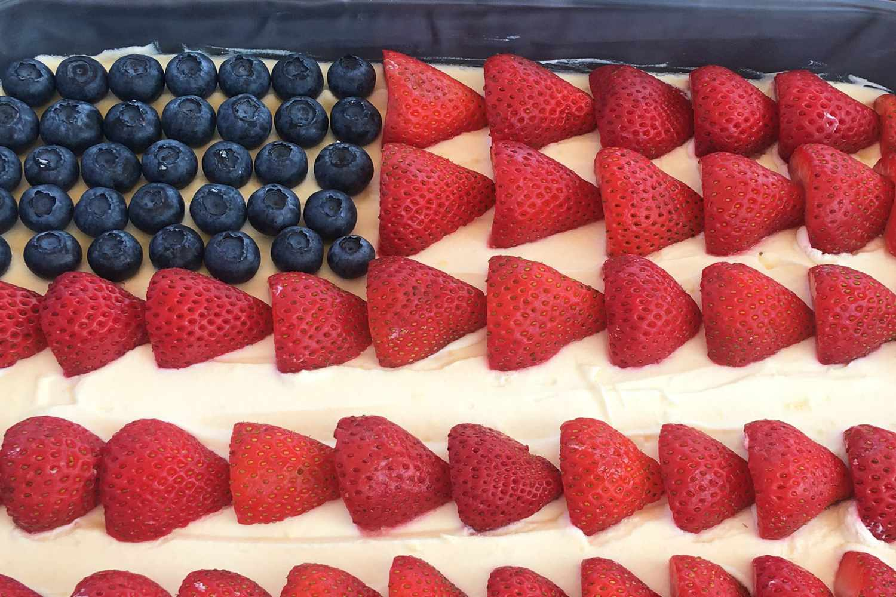
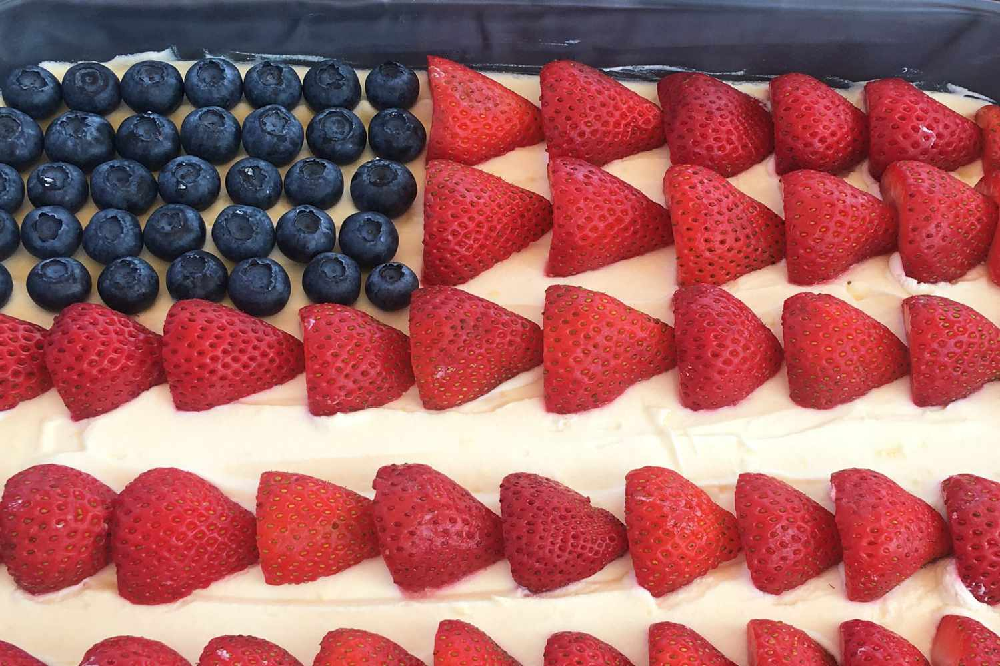
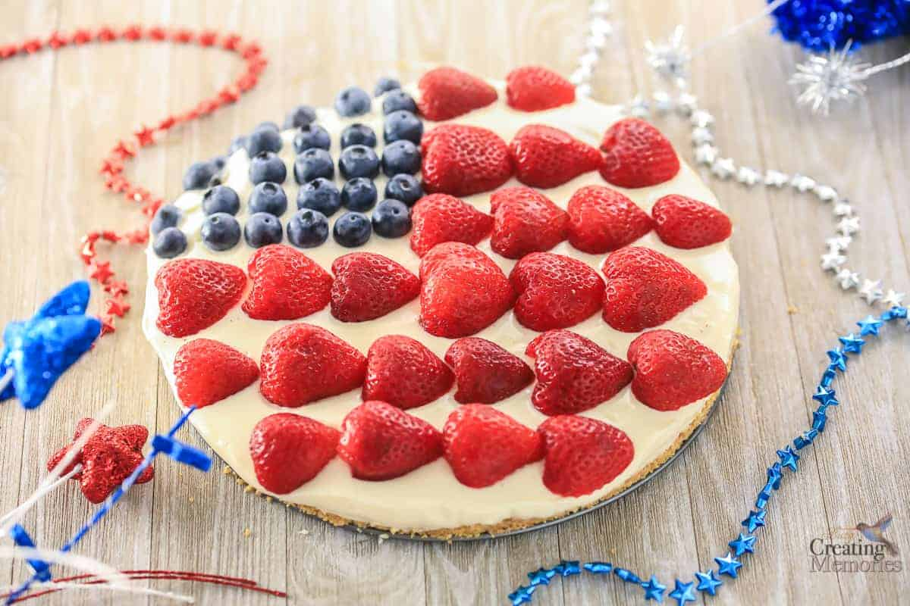
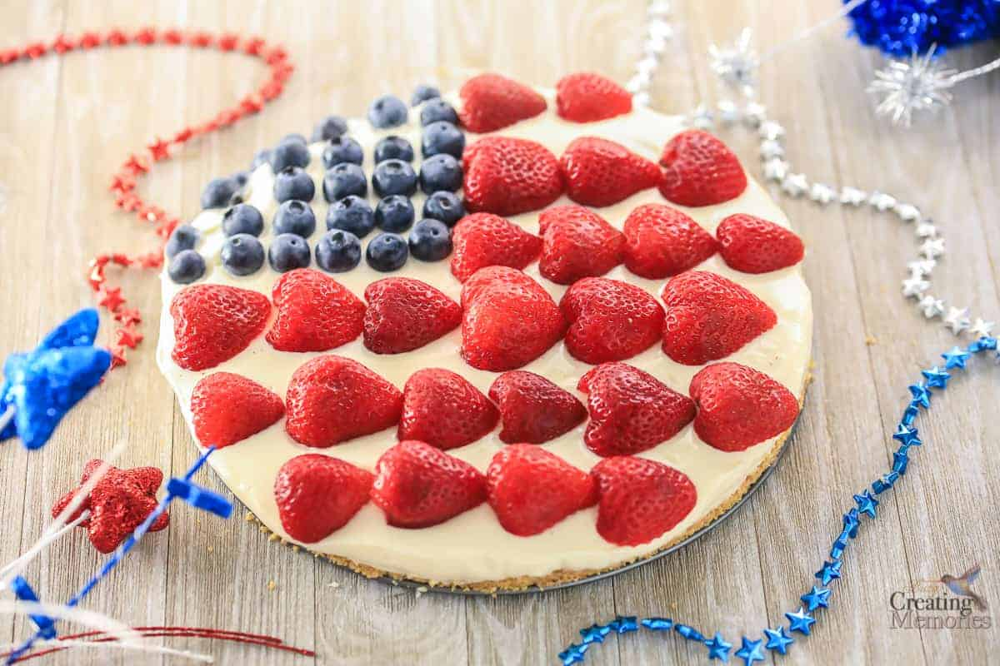

| Step 1 |
Combine graham cracker crumbs, 1/4 cup sugar, cocoa powder, and
melted
butter in a bowl until
mixture
is
thoroughly combined and crumbly. |
| Step 2 |
Transfer crust mixture to a 9x11-inch baking dish. Press crust into
bottom of dish until smooth
and
even.
Cover dish with plastic wrap and refrigerate until set, about 30 minutes.
|
| Step 3 |
Mix cream cheese and mascarpone cheese in a bowl until thoroughly
combined.
Stir in lemon zest, lemon juice, and vanilla extract into mixture.
|
| Step 4 |
Whisk 1/3 cup sugar into whipping cream in a separate metal or
glass
bowl until the cream is
fluffy
and
forms
soft peaks. Add whipped cream to the cream cheese mixture and gently whisk until filling is
soft,
fluffy,
and well combined. |
| Step 5 |
Spoon filling on top of the graham cracker crust, spreading and
smoothing the top.
Tap the pan gently on a work surface several times to settle the crust and filling.
Cover
pan
tightly
with plastic wrap and refrigerate until chilled and set, at least 3 hours.
|
| Step 6 |
Starting at the bottom long edge of the cake, arrange strawberry
halves
in a horizontal line
with the
pointed
bottoms of the strawberry halves pointing to the right. Start a second stripe of strawberry
halves
at
the
top right of the cake, arranging strawberries with the bottoms pointing right in a line
stretching
about
2/3
of the length of the cake. |
| Step 7 |
Continue to make strawberry stripes, starting about 3/4 inch up
from
the bottom stripe and
laying
down 3
more
stripes stretching the full length of the cake. Make 1 more line of strawberries beneath the
short
stripe to
leave a square space for the blue field of stars. |
| Step 8 |
Lay a line of blueberries with the blossom ends pointing up in the
upper left square space.
Continue
to
lay
down blueberries in lines, berries touching the previous line, until the square is filled
with
blueberries.
Cut cake into squares to serve. |
 

 
